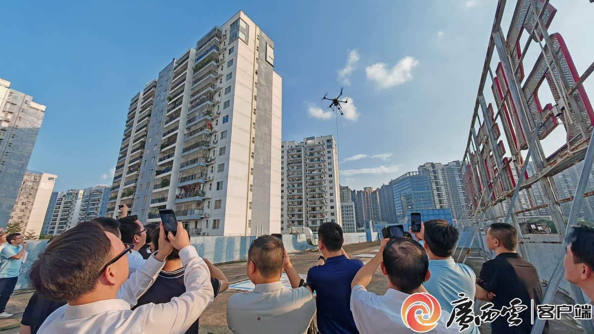
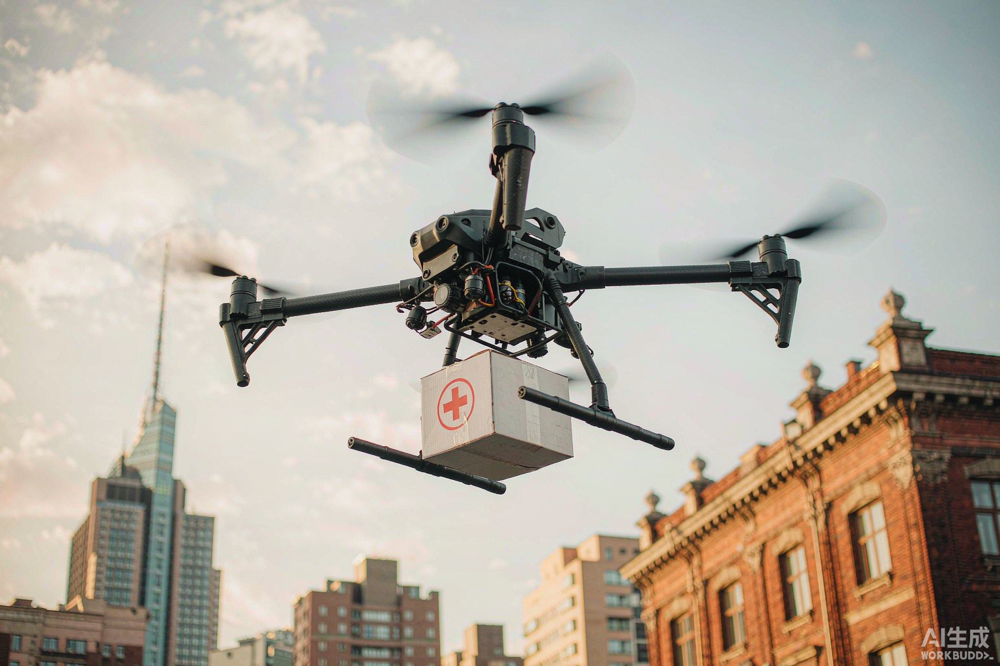
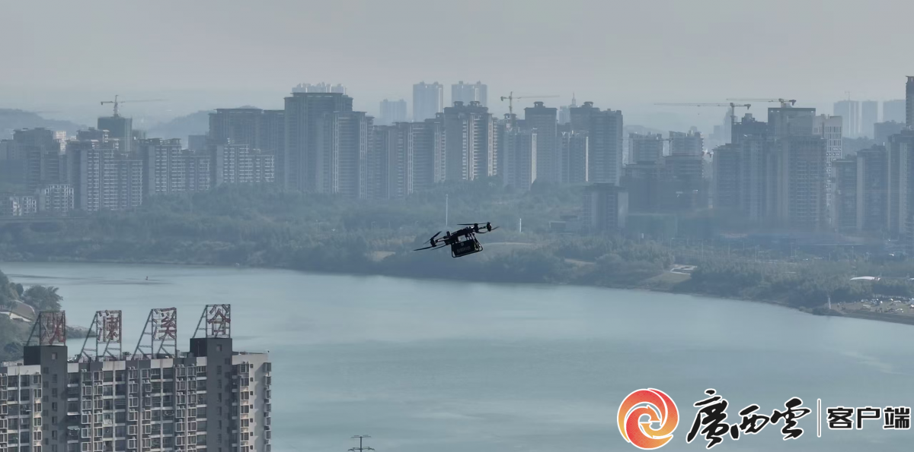
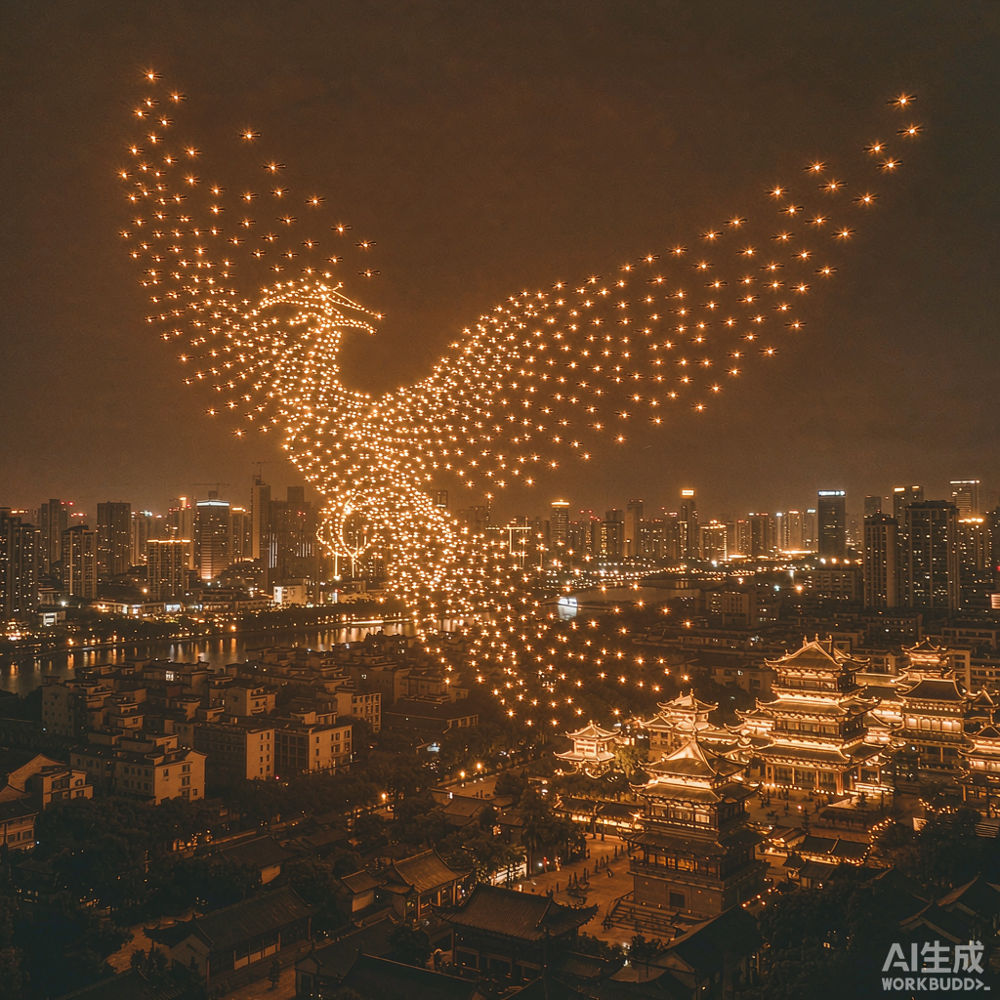
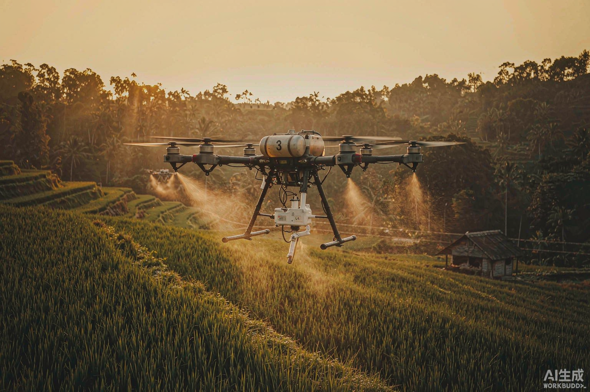

物流、应急、文旅、农业——低空技术在不同场景中的真实落地。案例信息来自权威媒体公开报道。

2024 年，智都科技开通南宁首条「低空外卖」航线，13 分钟飞行 11 公里；同步推出商业化低空配送平台「飞滴天下」，并与中国邮政广西区公司合作建设低空物流场站。
截至 2026 年 3 月，已在南宁建成无人机起降点 33 个、未来驿站 2 个、综合服务场站 1 个，航线覆盖商超外卖、景区物资配送与乡镇物流进村。

智都科技执飞广西首条低空生命线（约 75 公里）试航，用无人机在城区之间运送医疗物资；「智都低空·飞滴天下」亦曾赋能献血公益活动，见证「低空+医疗」场景的深度融合。
低空生命线的价值不只在速度，更在于为地面交通受限时提供一条可靠的替代通道。

青秀区联合智都科技部署无人机巡检系统巡查邕江，依托「低空+AI」实现高空喊话、隐患识别与立体监测，筑牢智慧堤坝。
在防汛场景中，无人机替代人工完成高风险、高频次的岸线巡查，把「事后处置」前移为「事前发现」。

从创意设计、编队排布到现场飞行，智都科技提供无人机灯光秀的全流程服务；媒体亦曾聚焦其无人机表演团队，揭秘「无人机群飞行规划员」这一新职业背后的集群控制技术与创意流程。
灯光秀把低空技术转化为可被大众感知的城市内容，是低空经济走向文旅消费的典型切口。

无人机植保与农业遥感提升农林作业效率，智都科技亦在探索面向东盟的跨境农业合作。农业场景对载重、续航与作业精度提出了与城市配送不同的要求，是低空装备能力的重要试炼场。
以上案例均来自公开报道。如需针对具体城市或场景的完整方案说明，欢迎与我们联系。